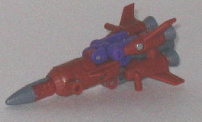
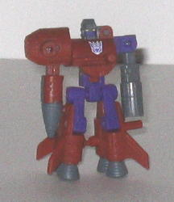
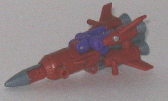
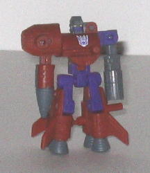
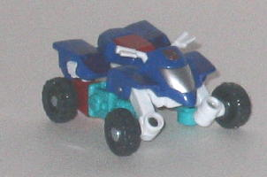
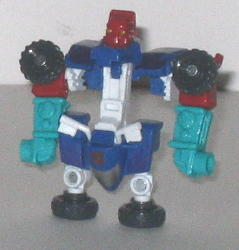

Backblast
Backblast
 
Allegiance : Decepticon, Minicon
Difficulty of Transformation : Easy
Color Scheme : Muddy orangish brown, moderately dark gray, purple, and some yellow
Individual Rating : 4.8
Backblast
vs. Sureshock
Size
: Mini-Con (2-pack)
Overall Rating
: 3.7
 Backblast
Backblast


Allegiance
: Decepticon, Minicon
Difficulty of Transformation
: Easy
Color Scheme
: Muddy orangish brown,
moderately dark gray, purple, and some yellow
Individual Rating
: 4.8
(NOTE: Because this toy is a repaint, this is not a full-blown review. This mainly covers any changes made to the toy and the color scheme, and merely compares it to Armada Skyblast. For a review on the mold itself, read the review of Armada Skyblast here .)
Backblast (teehee!) has
rather unusual colors for a rocket-- purple, gray, and brown. I don't know
about you, but I've never seen a rocket with brown and purple as main colors.
Still, the unrealisticness of it aside (is that a word?), the colors fit
together pretty well, especially the brown and purple. It's nice to see
color combinations like that, that are both original and work well together.
The gray serves as a nice third color, with not enough of it to make the
toy dull. Backblast does definitely need a few more paint apps, however,
as his face, nosecone, and jet engines are the only parts painted on him
(though the former is painted especially well, considering its minute size).
Having the rocket windows painted or parts of the large shoulder piece
in robot mode would have helped to vary the colors a bit more and make
him look less prototypish.
No mold changes have
been made to Backblast, so he unfortunately retains the same fragility
in his cannon-arm that Skyblast did. He does have a new Decepticon emblem
plastered on his robot chest, however.
 Sureshock
Sureshock


Allegiance
: Autobot, Minicon
Difficulty of Transformation
: Very
Easy
Color Scheme
: White, red, moderately
dark blue, and some sea foam bluish green, metallic goldish silver, and
metallic deep purple
Individual Rating
: 2.6
(NOTE: Because this toy is a repaint, this is not a full-blown review. This mainly covers any changes made to the toy and the color scheme, and merely compares it to Energon Sureshock. For a review on the mold itself, read the review of Energon Sureshock here .)
Sureshock's back with
a new paint job, and for the MOST part, I think it's better than the previous
one this mold has gotten. He keeps the basic blue and white that his Energon
form had, though they're not completely in the same places. However, a
few new colors have been added, including a rather sharp-looking red for
the seat/robot head and upper arms (though using it for the head may not
have been the best of decisions). Snazzy purple flams have been added to
the vehicle mode as well, and they look pretty hot against the blue, even
if they aren't the most visible deco jobs since they don't contrast all
that much. However, what knocks down this version of Sureshock to a rating
slightly below that of Energon Sureshock is that horrible, pukey shade
of bluish green used for his lower arms. UGH, it looks terrible, and completel
clashes with the red and white, and even if the entire toy was blue and
purple, it should only have been used as a minor accent color. If completely
throws off the color vibe of the rest of the toy.
No mold changes have
been made to Sureshock, though a new Autobot symbol has been painted over
his molded-in Minicon symbol, which is kinda lame.
Backblast vs. Sureshock
is a Minicon set with fairly attractive paint jobs (except for the ugly
bluish green lower arms on Sureshock). However, both of the molds are pretty
bad, so unless you're a Minicon completist or really REALLY want to form
the Umbral Blaster and Perceptor, you're better off passing on this set,
even if you don't have any of the previous versions of these molds.
Review by Beastbot